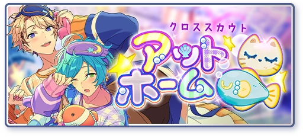
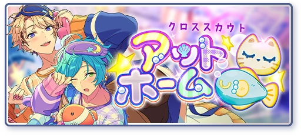

Shinkai Religion Because of Ibuki's family's proximity to the Shinkai side branch in Okinawa, having a basic knowledge of Kanata's religion helps.


 

Submarine Released May 2021
AKATSUKI and RYUSEITAI meet in Okinawa during the SS Preliminary Rounds. After being sought out for help by the local idols, RYUSEITAI and AKATSUKI work on pushing back against ES. At the same time, Kanata comes into contact with local worshippers.
Worldbuilding for Ibuki
⦿ AKATSUKI and RYUSEITAI pushing out ES's attempts to dominate the local idols in Okinawa has direct consequences going into Supervillain and Stella Maris that are related to Ibuki and his grandfather.
⦿ This story introduces a side branch of the Shinkai religion. Kanata's interactions with them lead to the main plot of Stella Maris later on.
⦿ Based off of details about the remote island in the story, it feels like the concept of Hoshijima was kept in mind. The undescript island is sealed off from the public and is an hour away from the main island by boat. Additionally, Keito tracks Souma down to the island via a GPS, not by a map (Hoshijima's existence was sealed off from the world. This included being erased from maps).
⦿ AKATSUKI and RYUSEITAI eat in a restaraunt together: Chiaki mentions that the owner is an old man who has strained his back. This detail matches a description given later on in Stella Maris.
Supervillain Released February 2023
Rumors spread of Tetora defecting from RYUSEITAI to an anti-ES agency called Crimson Productions, a crime syndicate based in Okinawa. RYUSEITAI, in an effort to pursue the truth, travel to Okinawa to find him.
Worldbuilding for Ibuki
⦿ Tetora infiltrates the crime syndicate Crimson Productions. This group previously held control over Okinawa before being disbanded by a group called Oni. Because AKATSUKI and RYUSEITAI prevent ES and its agencies from taking control of Okinawa during SS Submarine, Crimson Productions capitalizes off of the power vacuum and anti-ES sentiment to rise again.
fine in Okinawa Eichi and Tori's storyline revolves around the construction of the theme park ATLANTIS in Okinawa, as well as ES's steps towards establishing influence in different regions of Japan.

This is the third branch of the Okinawa Arc, but it's beyond my scope as an AKARYUSEI-P to talk about in-depth. Ask your local fine-P about these stories
Stella Maris Released January 2023
As the people of Hoshijima combat ES's attempts to construct ATLANTIS on the island and the state of its unsustainable economy becomes dire, Kanata and RYUSEITAI return to Okinawa to help the island. This story also heavily features fine.
Worldbuilding for Ibuki
⦿ We learn about Hoshijima, an island made of meteorites that is under a curse. Long ago, a side branch of the Shinkai settled here. It was previously under the control of Priest, isolated from the world. Only after his death have they started to make contact again.
⦿ We meet a relative of Ibuki's - Mizusaba. Mizusaba talks about Ibuki and their grandfather (a pirate who led a group called Oni) at length throughout the story: Ibuki is the successor of Oni. Previously, he disappeared to America without a trace and couldn't be contacted.
⦿ We learn small facts about Ibuki - He was a reliable figure in the community who helped whenever it was needed of him. His western influence has influenced the main Okinawa island. We also learn that he is not suited for matters in religion.
⦿ When RYUSEITAI and Konata go eat at the restaraunt Mizusaba works at, the details of the restaraunt match that of the one from Submarine: it is owned by an old man with a strained back (Mizusaba's grandfather).
⦿ We meet the people of Hoshijima and a relative of Kanata's - Konata. We also find out Kanata's mother is not dead.
⦿ Kanata maintained contact with the worshippers he met during SS Submarine. Because of this, they trust him enough to ask him for help.
⦿ Tetora's dissolution of Crimson Production makes him a suitable delegate to help tensions between the people of Hoshijima and ES.

Ibuki Taki Idol Stories 1 and 2 Released May 2024
Our first introductions to Ibuki. Ibuki talks to Anzu in Idol Story 1, and ambushes Hiiro and Tetora in Idol Story 2.
Worldbuilding for Ibuki
⦿ In Idol Story 1, Ibuki mentions his grandfather (these details match the details Mizusaba gave about him) - namely that after behaving badly, his grandfather "ripped off his horns".
⦿ In Idol Story 2, Ibuki tells Tetora that he knows of his infiltration of Crimson Production: he came to challenge him to see the kind of person he was.
VS AUDIENCE Released August 2024
Thunderbolt Productions is hosting a competition where idols compete to be produced by Nice Arneb Thunder, an accomplished, international producer and former idol. VS AUDIENCE covers the third venue of these competitions, the Twin Rooster Pagoda, where idols compete in pairs to win the approval of hundreds of people.
Worldbuilding for Ibuki
⦿ This is Ibuki's debut event in the main story. In it, we learn Ibuki's motivations for coming back from America and joining 4piece.
⦿ Ibuki gets paired up with Keito for Twin Rooster Pagoda. Ibuki demonstrates having heard of AKATSUKI early on in the story, and confirms that it's "because he's from Okinawa" (possibly indicating AKATSUKI had some impact during the events of Submarine).
⦿ Nice-P initially scouted Ibuki for 4piece to be a solo idol. However, Ibuki's performance in VS AUDIENCE gives Nice a new perspective of him.

Final Ceremony Released November 2024
When the results of 4piece are revealed, Ibuki leaves the ceremony and ponders his next steps. Keito seeks him out as soon as the ceremony is done to ask him a question.
Worldbuilding for Ibuki
⦿ Keito invites Ibuki to perform with AKATSUKI
⦿ Nice-P explains that the original leader he had in mind for Special for Princess turned down the offer. Based off his dialogue from VS AUDIENCE, it may be likely that he intended to make Ibuki the leader after seeing "a new side of him".